Artistes Country
Voici une liste d’artistes country incontournables, classés par époque et style :
🎶 Les Pionniers (années 1920-50)
Jimmie Rodgers – Considéré comme le « père de la country », connu pour ses blue yodels.
The Carter Family – Une des premières familles de la country, avec des chansons comme Can the Circle Be Unbroken.
Hank Williams – Véritable légende du honky tonk, avec des classiques comme Your Cheatin’ Heart et I’m So Lonesome I Could Cry.
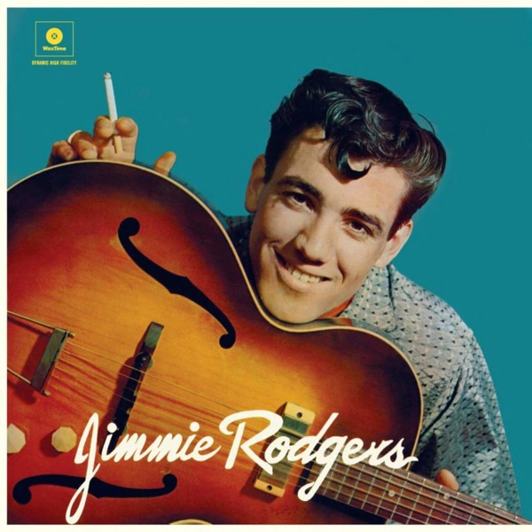
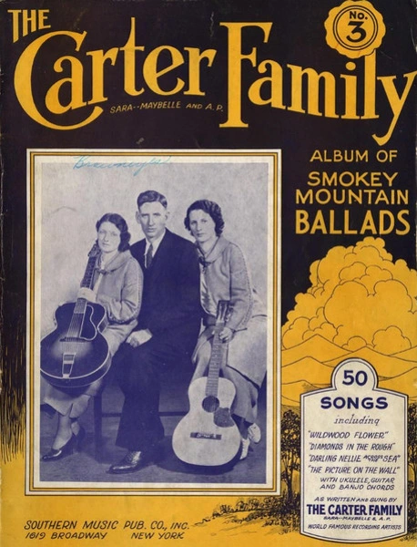
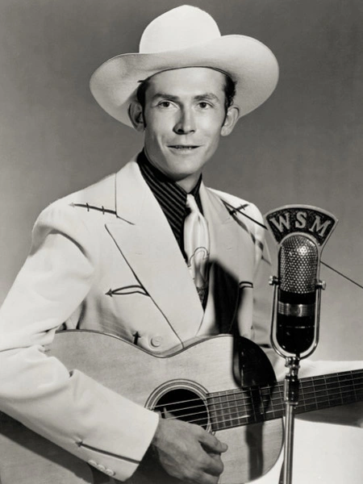
🎸 L’Âge d’Or de la Country (années 1950-70)
Johnny Cash – « The Man in Black », connu pour Ring of Fire, Folsom Prison Blues et I Walk the Line.
Patsy Cline – Icône de la country, avec des ballades comme Crazy et Walkin’ After Midnight.
Merle Haggard – Pilier du « Bakersfield Sound », avec Mama Tried et Okie from Muskogee.
Loretta Lynn – Légende féminine avec des chansons comme Coal Miner’s Daughter.
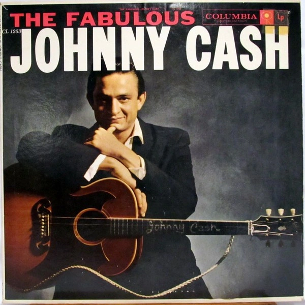
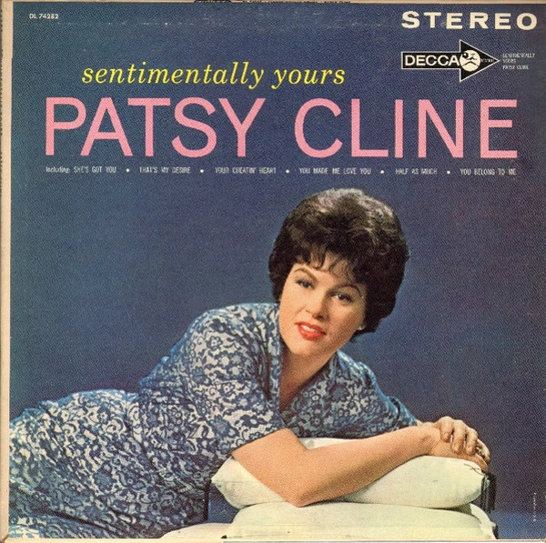
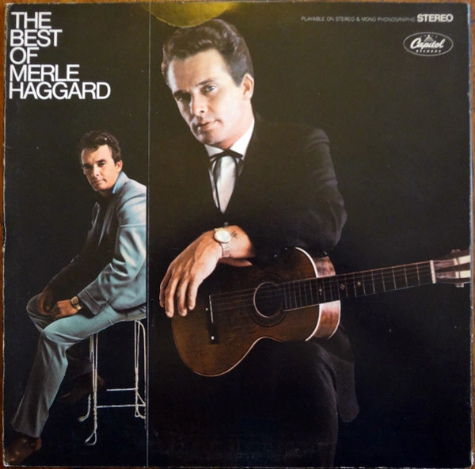
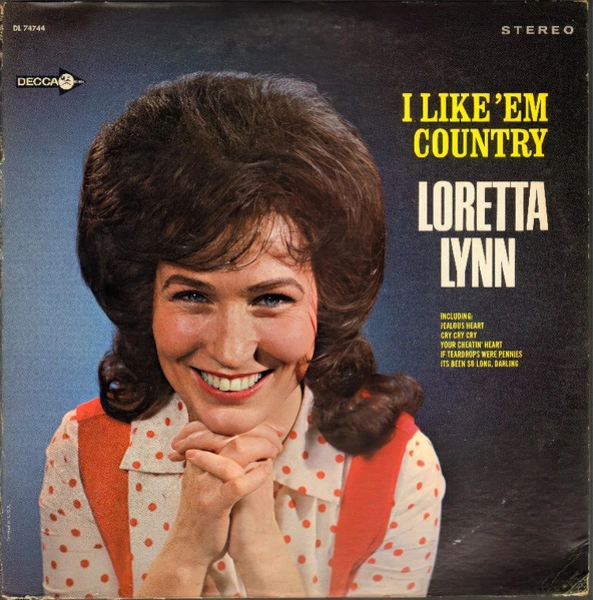
🤠 L’ère Outlaw (années 1970-80)
Willie Nelson – Un des leaders du mouvement « Outlaw », connu pour On the Road Again.
Waylon Jennings – Son style plus rebelle se retrouve dans Luckenbach, Texas.
Kris Kristofferson – Auteur-compositeur majeur, connu pour Me and Bobby McGee.
Dolly Parton – Icône country-pop avec Jolene et 9 to 5.
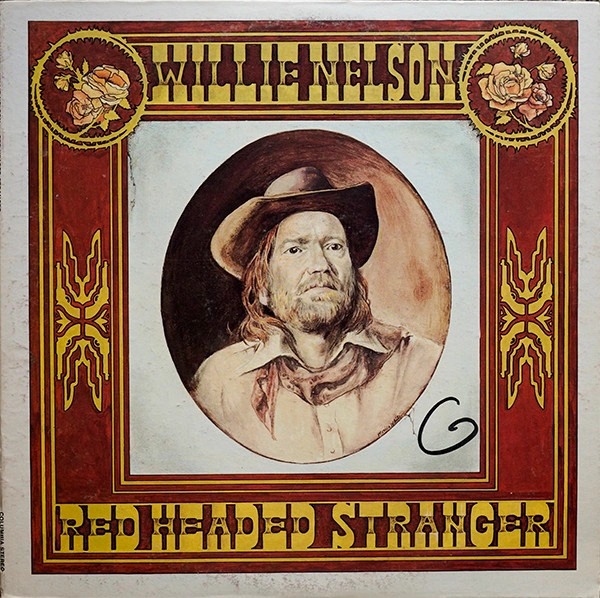
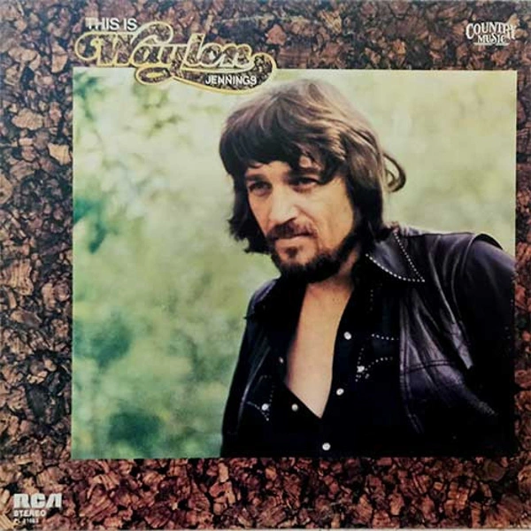
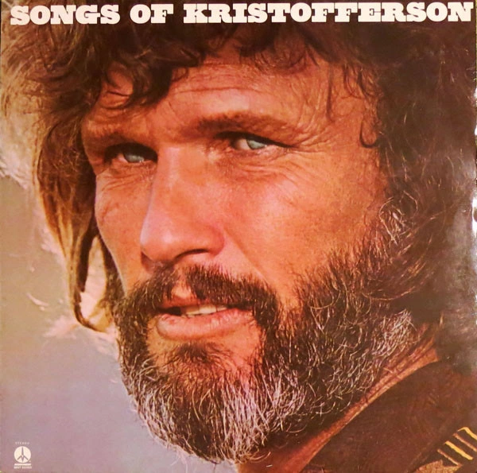
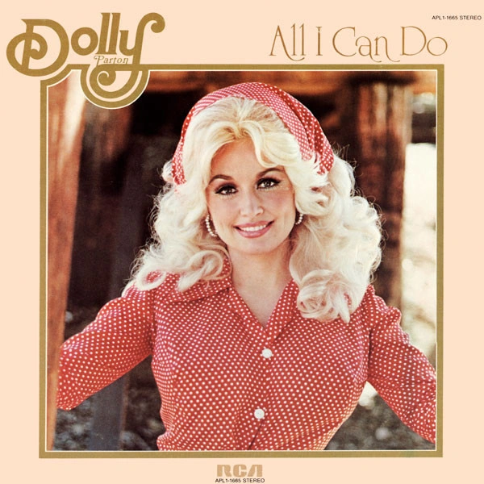
🌟 Country Pop & Mainstream (années 1990-2000)
Garth Brooks – L’un des artistes country les plus vendus avec Friends in Low Places.
Shania Twain – Reine de la country pop, avec Man! I Feel Like a Woman!
Tim McGraw – Connu pour Live Like You Were Dying.
Faith Hill – Hits comme Breathe et This Kiss.
Alan Jackson – Mélange de country traditionnelle et moderne (Chattahoochee).
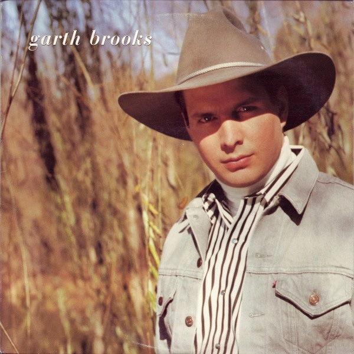
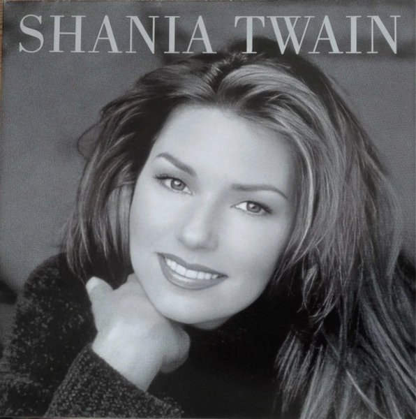
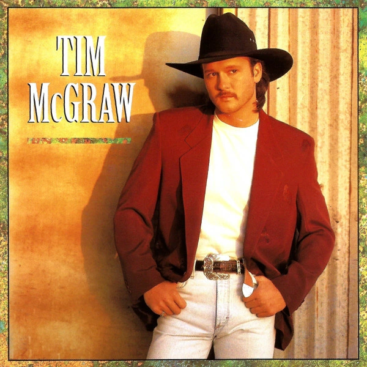
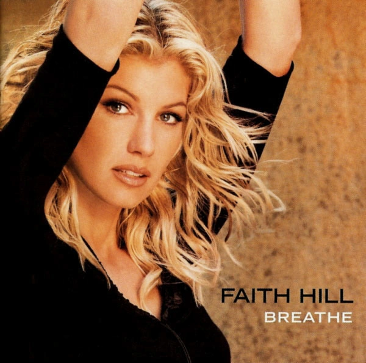
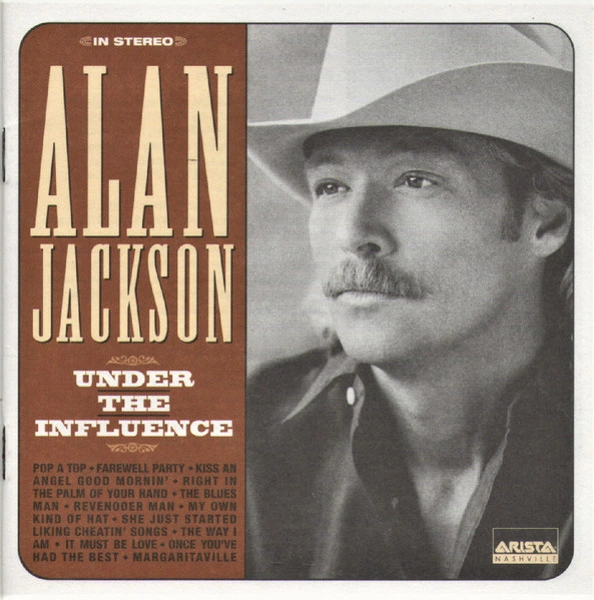
🎤 Country Moderne et Fusion (années 2010-aujourd’hui)
Chris Stapleton – Son bluesy et authentique, avec Tennessee Whiskey.
Kacey Musgraves – Mélange country et pop alternative, connue pour Follow Your Arrow.
Luke Combs – Voix puissante et succès comme Beautiful Crazy.
Morgan Wallen – Star du « bro-country », avec Last Night.
Carrie Underwood – Révélée par American Idol, avec Before He Cheats.
Zach Bryan – Nouvelle génération de country-folk, avec Something in the Orange.
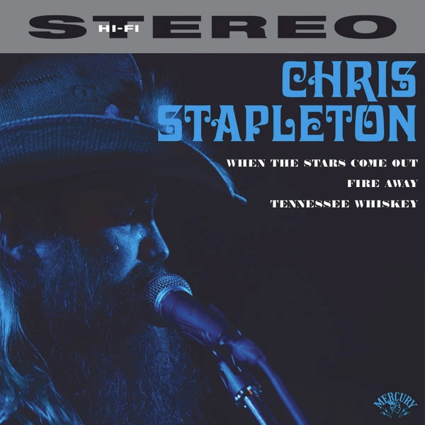
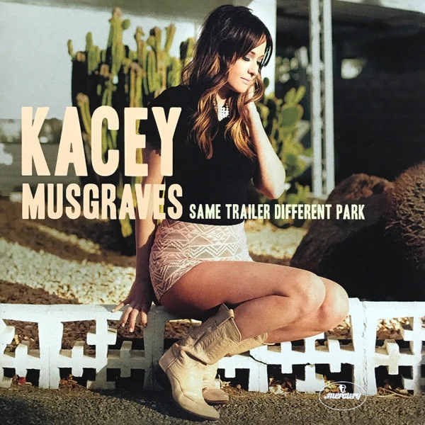
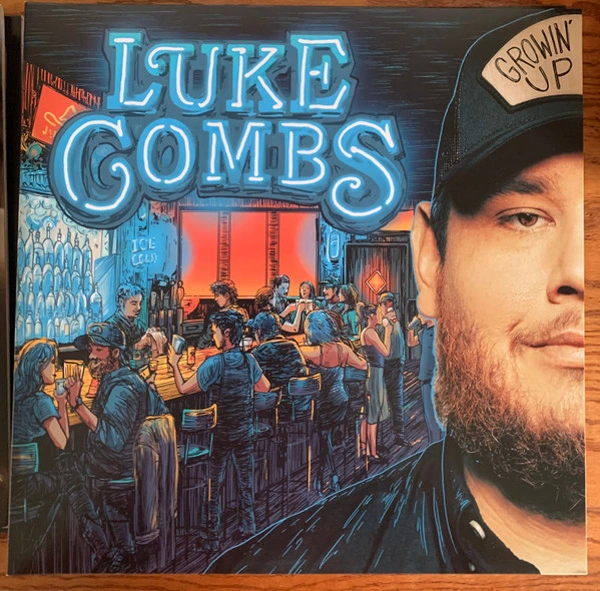
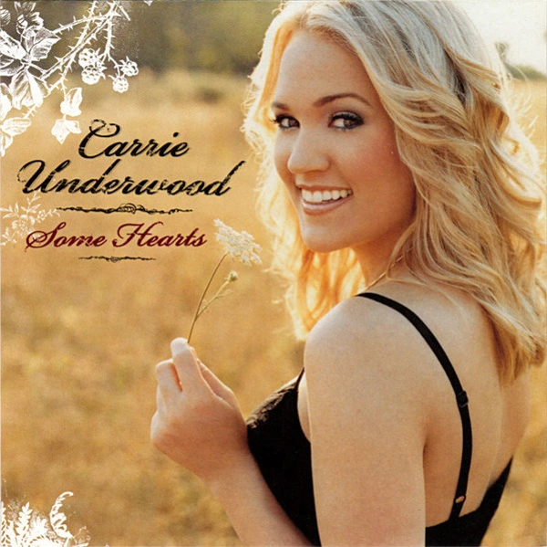
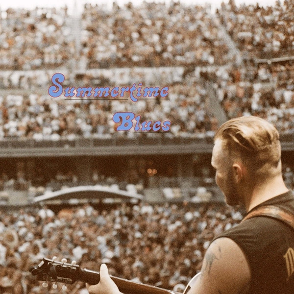
Références :
- Source des images : www.discogs.com